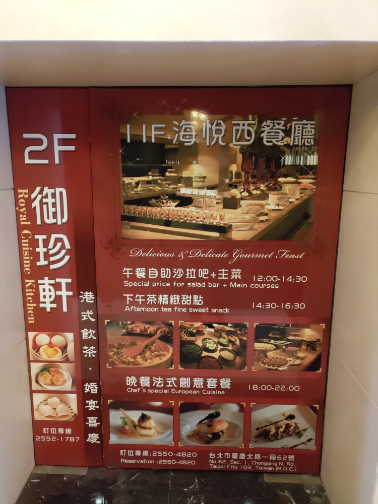
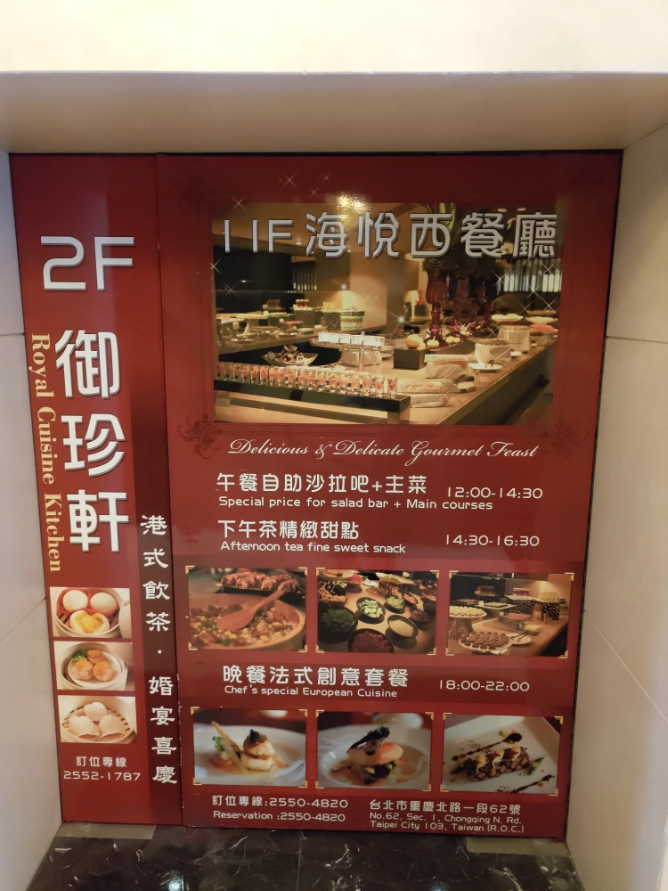

[台北] 御珍軒港式飲茶
| 餐廳名稱: | 御珍軒港式飲茶 官網 |
|---|---|
| 御珍軒港式飲茶 FB粉絲頁 | |
| 地 址: | 台北市大同區重慶北路一段62號2樓 |
| 營業時間: | 週一至週日 11:30~14:30 17:30~21:30 |
| 電 話: | 02 2552 1787 |
邀請爹娘一起共進午餐，挑一間老餐廳。其實年紀漸長，我自己也愛老餐廳了。這間御珍軒港式飲茶， 位於 福君海悅大飯店 二樓，它的港式點心、廣東大菜 做得不錯，早就聽說很久了。
附近不是很好停車，但是女王大人竟然能在涼茶之家斜對面，停到公有停車格，讓我真是欽佩不已。
坐電梯到二樓，入口處兩片大門一面封死，弄成大大個廣告看板。
 

今天還好有訂位，到的時候是客滿，幾組客人在排隊。拍這張照片時，已經接近下午兩點，幾桌走掉了。
有一位爆炸頭女士，應該是服務人員的高階主管，御珍軒港式飲茶 FB粉絲頁 常見她的照片， 算活招牌了吧，找她拿菜單比較快，她態度也蠻好的，就是很忙而已。
人很多，趕快點一點，所以就沒拍整本菜單了，反正 御珍軒港式飲茶 官網 有完整菜單。 先用點菜單充場面。 點心類的都在這裡了，另外再點幾道大菜。
桌上立牌，看這面點了 蒜蓉蒸鮮蝦。
桌上立牌，看這面點了 越式靓蝦腸粉與蘿蔔絲酥餅。奶黃流沙包 因為看到一則 Google 評論說不喜歡，其他評論也沒認真看很多，就沒點。 可是 女王大人停好車，來餐廳會合後，說蠻多人說好的，但客人太多，只好放棄加點，下次再來試試了。
燒臘雙拼，拚 烤鴨腿 與 叉燒，還可以，但是這道菜價格偏高，一生就吃這麼一次吧，已經知道味道了，未來不再點了。
這時候，有服務生拿著一盤全新的廣東炒飯來推銷，因為這道菜暢銷，廚房自作主張一次炒兩份，讓服務人員推銷第二份，免得等很久。 可是我已經點了 鹹魚雞粒炒飯 了，只好婉拒。服務人員轉往隔壁桌就推銷成功了。接下來果然等得略久，早知道就接受，總共吃兩份炒飯有啥關係。
叉燒酥。
鹹魚雞粒炒飯，這道菜蠻暢銷的，每個人用小碗吃了一兩碗。
奶油烤白菜。
辣味蒸牛肚，比較少見，就點了。
蒜蓉蒸鮮蝦。這道後來 麵跟醬汁 打包回家，又撐了一餐，挺實用的菜。

腐皮牛肉丸。
豉汁蒸排骨。
魚子蒸燒賣，吃了一個才想起來拍照。

越式靓蝦腸粉，只有這邊有，吃起來是不錯，似乎是油條裡面擠滿扎實的蝦泥，略像百花油條，為什麼越南人要這樣吃啊? 為什麼廣東菜餐廳要賣越式啊? 不管了，好吃就好。
蘿蔔絲酥餅。那個包成一絲一絲的手法要嘉獎一下。
豉椒蒸鳳爪。
大部分的菜都滿意，口味沒啥問題，每道菜的評語都是好吃，我就不寫出來了。 某幾道菜覺得略貴，不過這邊是靠近後火車站的大飯店，本來就會貴一些，其實也不能怪飯店。 整體而言，算是滿意，推薦給讀者。
又是一間很正常的港式飲茶，在這個正常餐廳不多的世界，顯得格外珍貴。有機會到後火車站玩的話，會再來 御珍軒 享用廣東菜。